Bulgarian Cyrillic
Native handwritten forms for uppercase and lowercase Bulgarian Cyrillic.
Original typeface · Version 1.7
A handwritten calligraphic typeface with native Bulgarian Cyrillic, matching Latin forms, and a light rhythm shaped by ink.
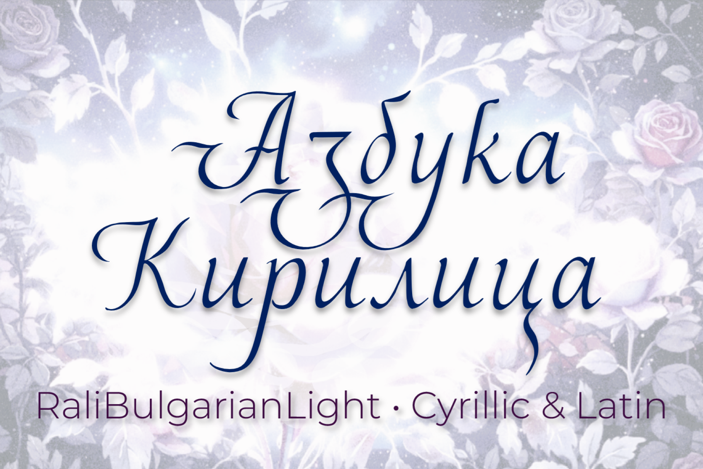
01
Real-world use cases
The specimens below use the actual Rali Bulgarian Light 1.7 outlines. They explore editorial, cultural, identity, invitation, and packaging contexts.
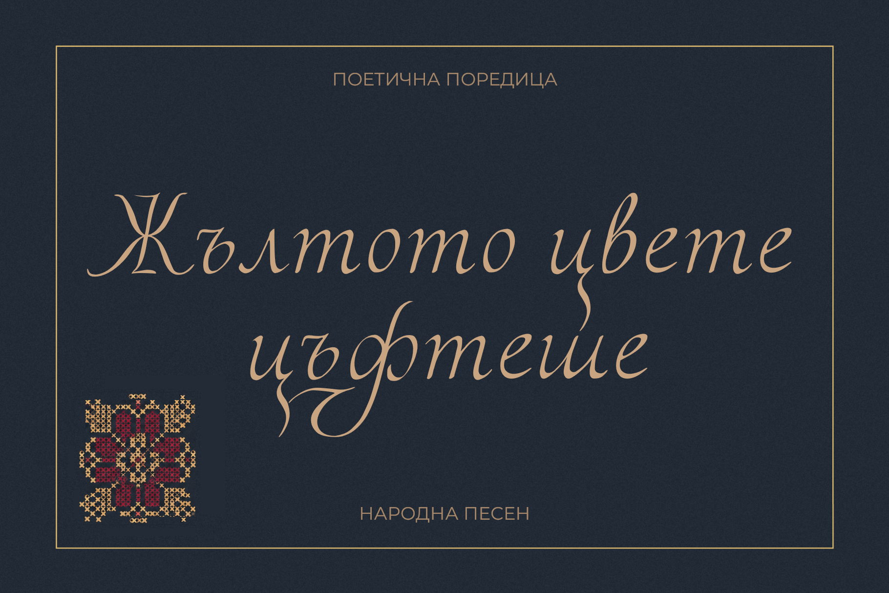
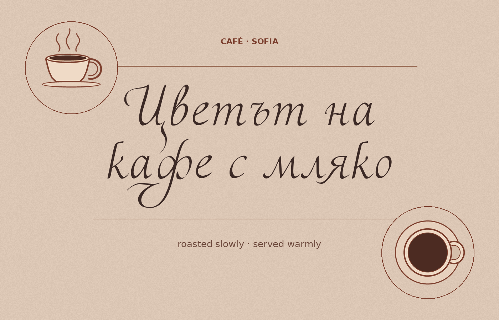
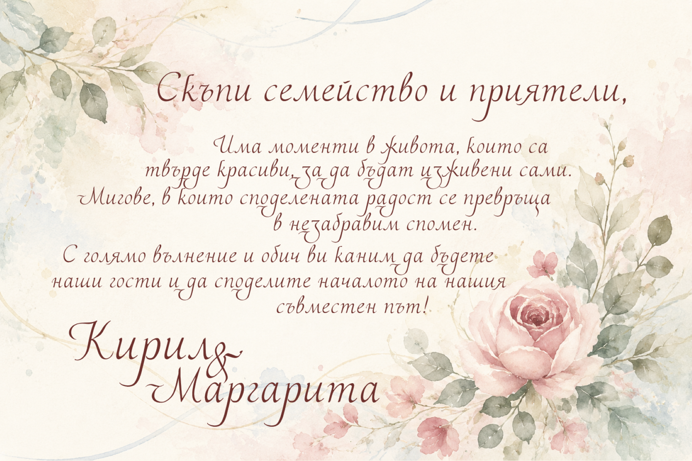
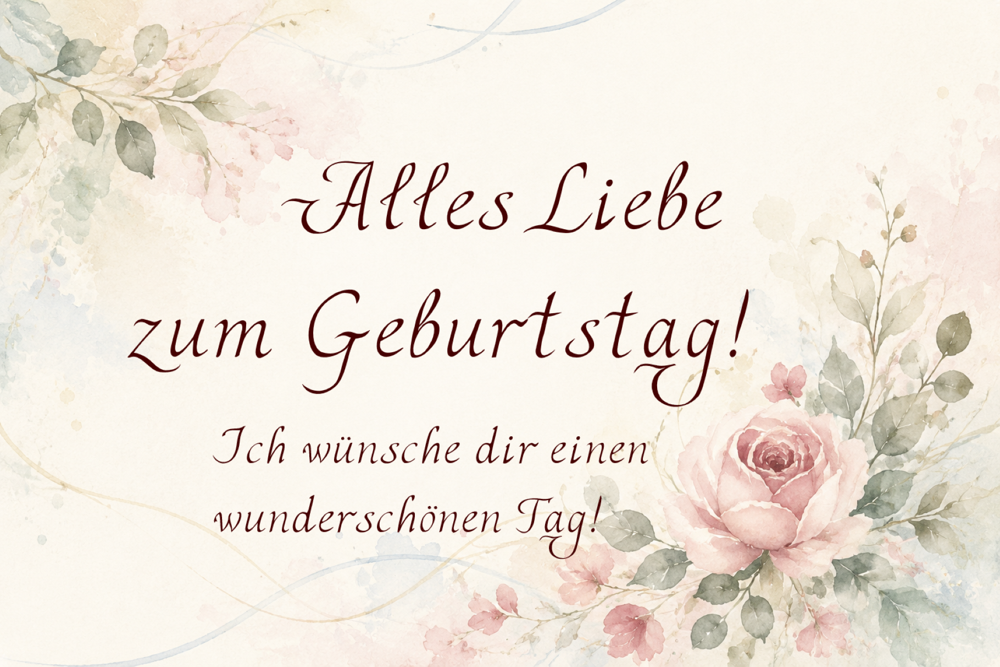
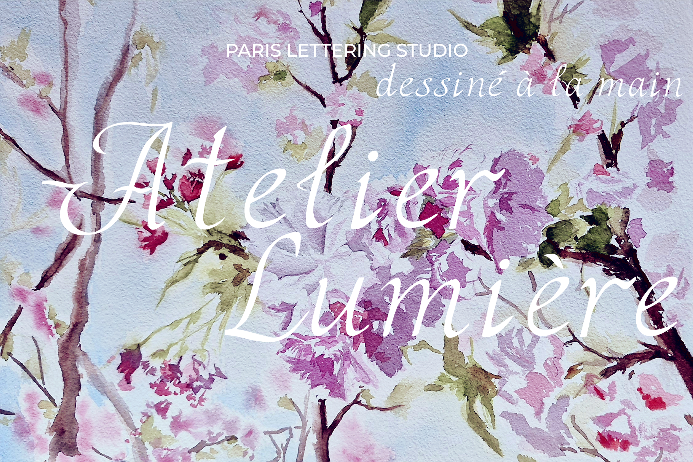
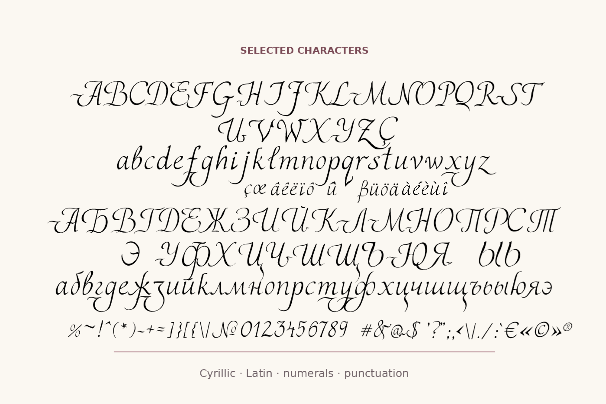
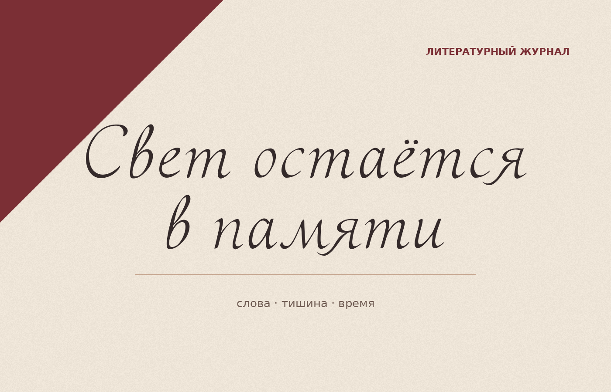
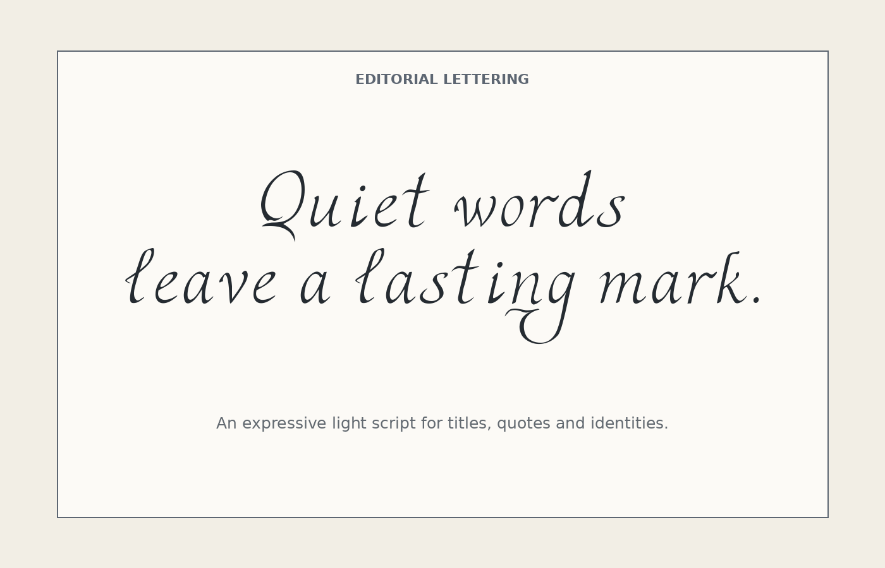
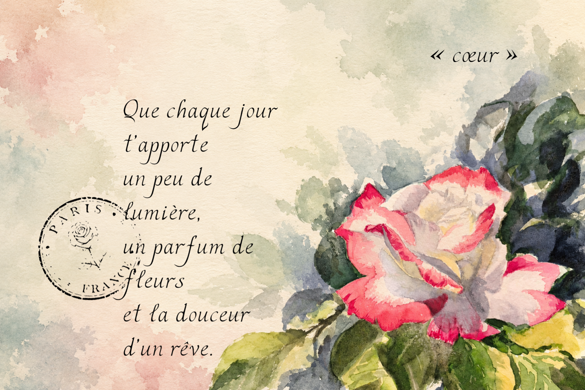
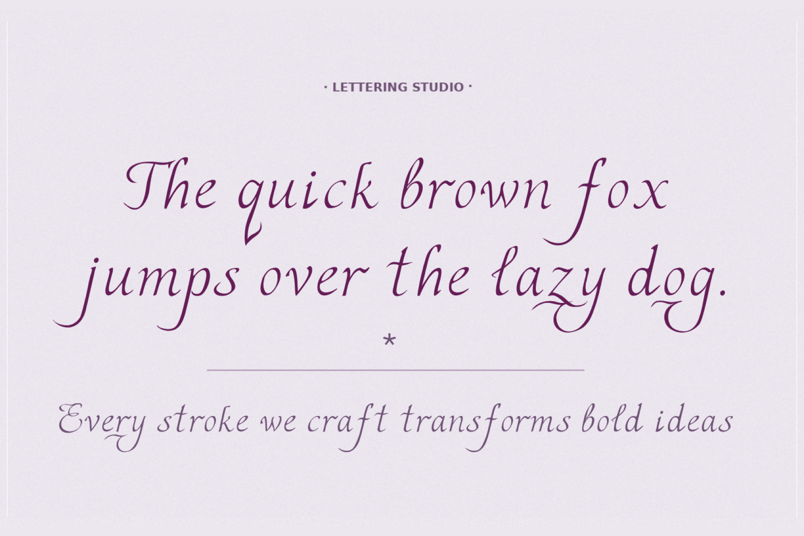
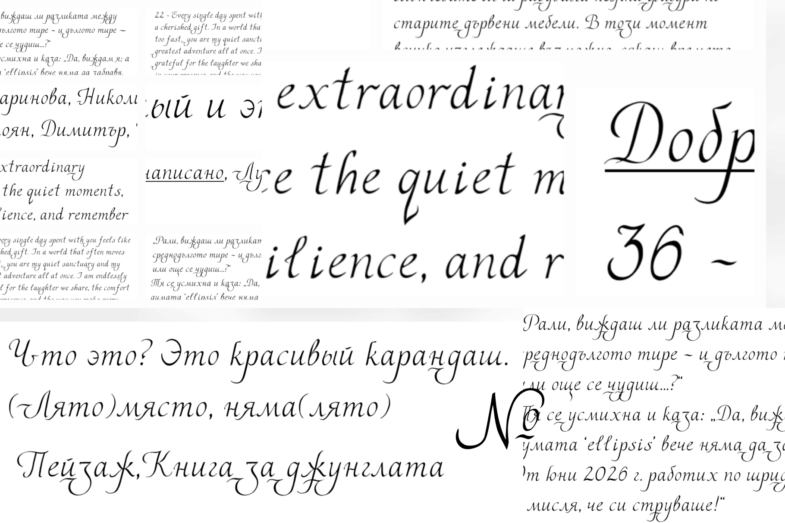
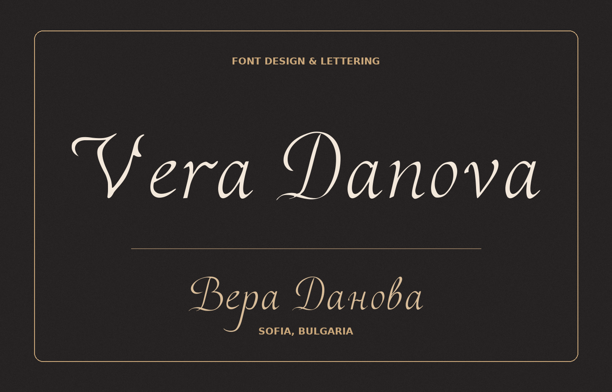
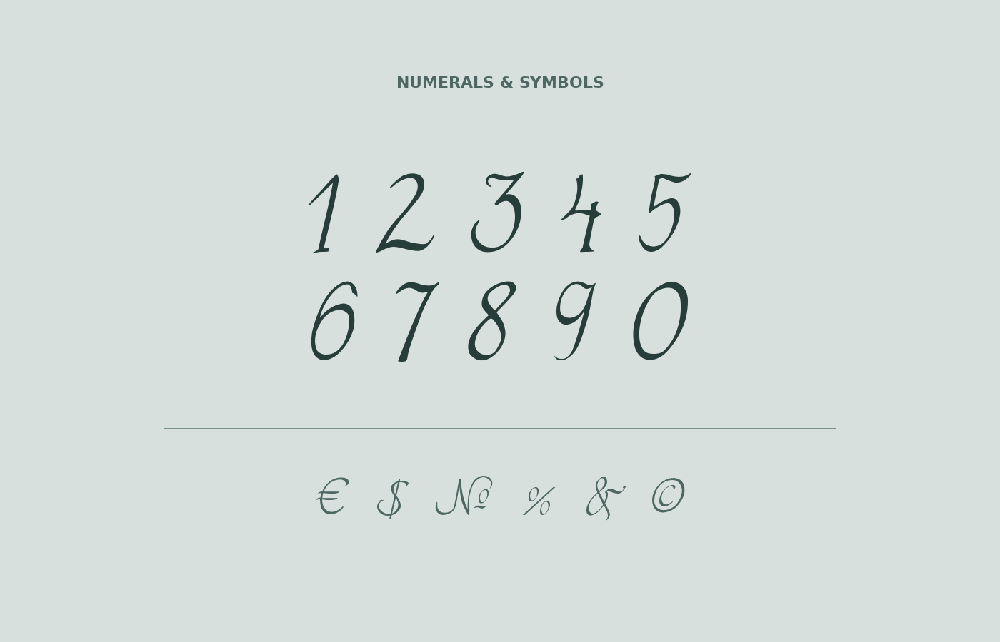
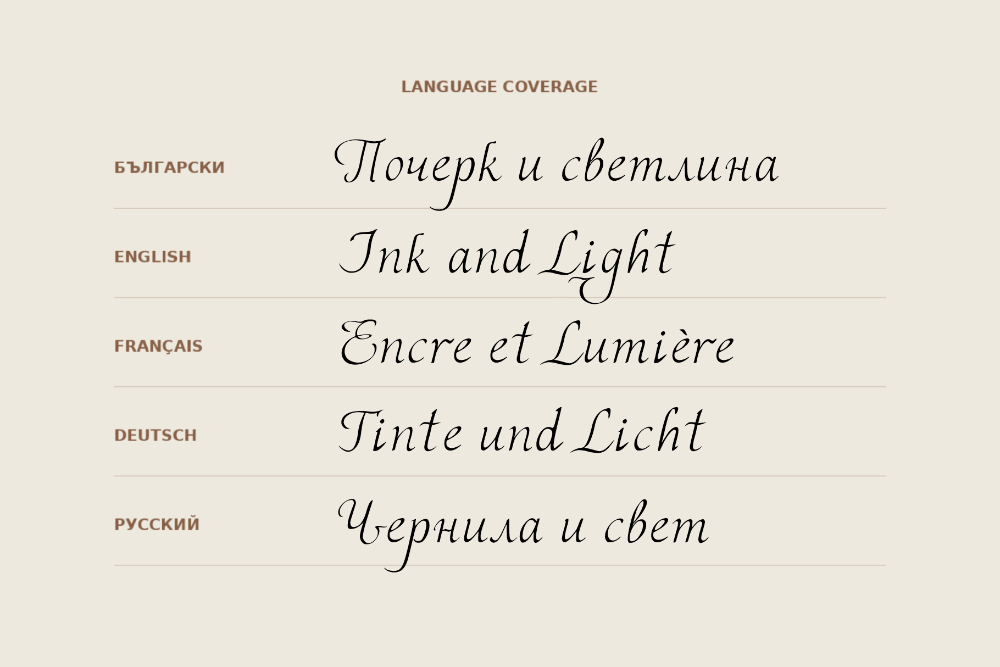
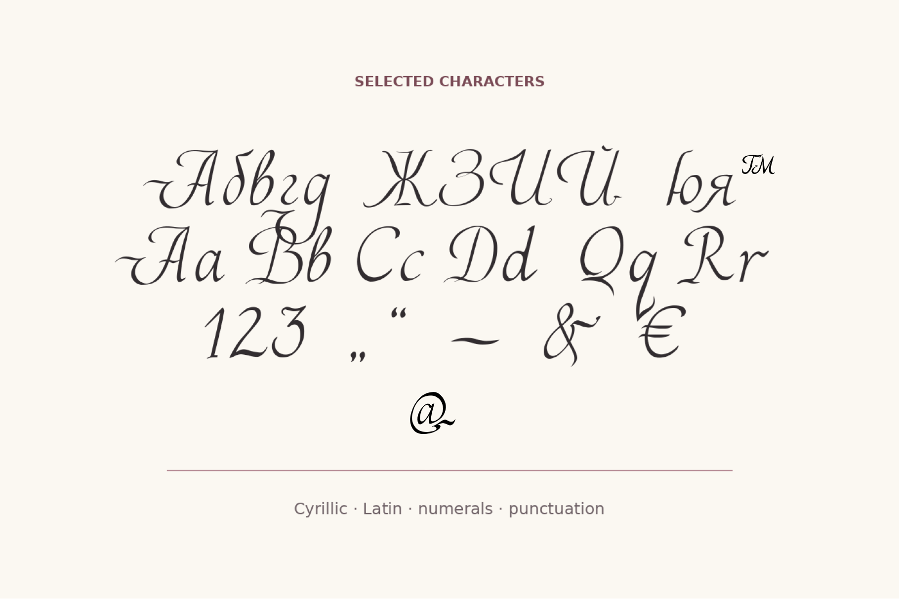
02
Character & language testing
Native handwritten forms for uppercase and lowercase Bulgarian Cyrillic.
Uppercase, lowercase, and diacritics tested in English, French, and German text.
Core Russian Cyrillic characters tested through words, sentences, and punctuation.
Numerals, punctuation, quotation marks, currency, copyright, and common symbols.
Tested with Bulgarian, English, French, German, and Russian sample texts.
03
About the typeface
Rali Bulgarian Light is an original typeface by Vera Danova. Its contrast recalls writing with a quill or a fine metal nib: expressive enough for a title, restrained enough to let the words remain central.
The Cyrillic and Latin alphabets were developed as one visual family, with particular attention to the character of Bulgarian handwriting.
Portfolio verification